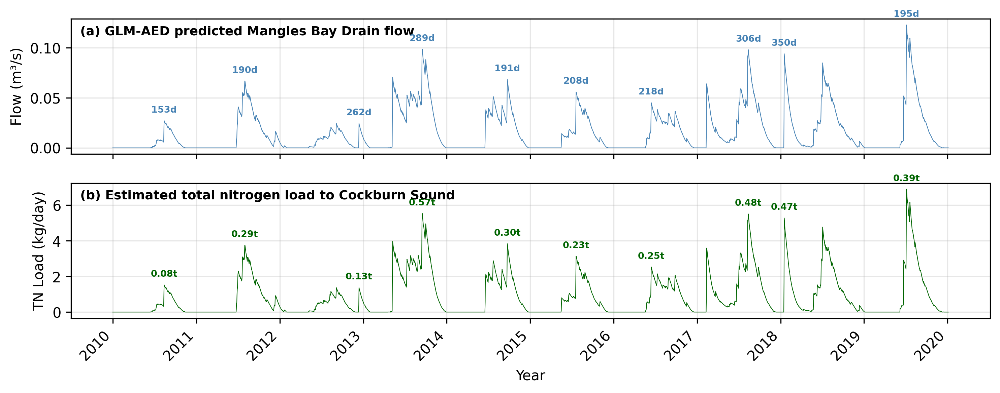

13 Integrated Ecosystem Model Assembly
13.1 Overview
Cockburn Sound has undergone significant water quality changes over many decades, shaped by both natural processes and intense human activity (Mitchell et al., 2025). Understanding how nutrients and other pollutants move through the system has proved challenging, in part because the Sound receives inputs from many different sources. These include atmospheric deposition, groundwater inflows, stormwater and urban drainage, industrial and wastewater discharges, as well as nutrients released from the seabed itself. Although direct river flows to Cockburn Sound are limited, nutrient concentrations commonly rise near the shoreline and at discharge points, and occasional large flow events from the Swan–Canning Estuary can also influence local water quality.
The history of changes means that ecosystem structure and function have also shifted. From the 1950s through to the 1980s, severe eutrophication occurred, whereby an excess of nutrients fuelled high algal productivity and reduced water clarity. During this period, wastewater and industrial effluents increased substantially, and the construction of the Garden Island causeway in the 1970s further reduced flushing of nutrients to the open ocean. The combined effect of these pressures was dramatic: more than 80% of the seagrass meadows were lost, largely due to nutrient enrichment and growth of epiphytes that blocked light from reaching the leaves.
Significant management efforts have since helped reduce nutrient loads, particularly through improved wastewater treatment and redirecting discharges offshore. However, the legacy of historical inputs remains. Nutrient-rich groundwater continues to enter the Sound, sandy sediments store large historical nutrient loads, and internal recycling of nitrogen and phosphorus still contributes substantially to the nutrients available in the water column. While concentrations of nitrogen and phosphorus have declined in recent decades, improvements in water clarity and phytoplankton biomass have been slower and less consistent. Fish kills, algal blooms, and episodes of low-oxygen bottom waters continue to be reported. In addition, hypersaline brine from the desalination plant has been shown to form dense plumes that may settle near the seabed, reinforcing stratification and making hypoxia more likely under certain conditions.
Together, these patterns highlight that nutrient dynamics in Cockburn Sound are shaped by a combination of external loads, internal cycling, and physical processes such as mixing, stratification, and ocean exchange. Assessing these interactions requires an integrated approach capable of linking hydrodynamics, nutrient budgets, biological processes, and local management actions. An advanced biogeochemical model provides this capability. It allows us to explore how nutrients move through the system today, identify key environmental risks, and evaluate how future changes—such as dredging, coastal development, or climate-driven shifts in flows and temperatures—may influence water quality.
Developing such a model relies on a firm understanding of the broader physical environment (Chapter 9) and the many sources of nutrients entering the system (Chapters 8, 9 and 10). Previous studies have shown that nitrogen, in particular, plays a central role in controlling productivity in the region. Even small inputs can drive substantial ecological responses in this naturally low-nutrient coastal setting. Although overall nitrogen concentrations have decreased due to improved management, phytoplankton biomass has remained elevated at several locations, and seagrass extent has not increased, reinforcing the need for an integrated model able to quantify both external inputs and internal ecosystem processes.
The CSIEM model domain spans the wider Western Australian coastal zone and therefore captures a range of nutrient sources beyond those that directly enter Cockburn Sound —including catchment discharges, groundwater inputs, and wastewater treatment plant outfalls. To build a robust and defensible modelling framework, it is essential to clearly describe these inputs and how they shape nutrient conditions within the Sound.
This chapter therefore outlines the approach used to (i) specify external nutrient loads, (ii) the approach to parameterisation of different benthic zones, and (iii) describes how the model represents internal biogeochemical cycling (Figure 13.1). Together, these components form the foundation for understanding present-day ecosystem conditions and assessing future environmental risks. Links to other modules are also outlined.

Figure 13.1: Schematic overview of this chapter highlighting the focus of the three sub-sections in relation to other chapters.
13.2 Inputs and Nutrient Loads
13.2.1 Groundwater inputs
Submarine groundwater discharge (SGD) has emerged as a dominant nitrogen source into Cockburn Sound following redirection of urban and industrial wastewater outflows to the Cape Peron Sepia Depression ocean outfall (Greenwood et al., 2016). The approach to capturing the variability in groundwater flows, and groundwater nutrient speciation is outlined in detail in Chapter 12.
model_components/includes/bc/6_gw folder.
13.2.2 Catchment river / estuarine inputs
Catchment surface water inputs to the CSIEM modelling region include nutrient loads transported from the Swan-Avon catchment via the Swan-Canning Estuary and from the Peel-Harvey catchment through the Peel-Harvey Estuary. The Swan-Canning contributions can be significant in high flow years, and to a lesser extent outflows from the Peel-Harvey system can also be a minor contributor. The degree to which either source enters the Cockburn Sound region depends on the prevailing currents at the time, for example if there is a predominantly southward or northward flow tendency (see Chapter 9). For both these inputs, flow rate and water quality data were sourced from the Department of Water and Environmental Regulation (DWER) Water Information Reporting (WIR) portal, and these data were interpolated into daily intervals to facilitate continuous model simulations between 1990 and 2024.
Swan-Canning : For this system the CSIEM model domain extends to boundary locations at the Narrows and Canning Bridges. To establish total flow through these boundaries, flow rates from upstream locations were aggregated. Water quality observations from the Narrows Bridge (site 6160262) and Canning Bridge (site 6167160) were interpolated to set inflowing for nutrient inputs to the Swan and Canning Rivers, respectively.
Peel-Harvey : For this system, the flow data used for 1970-2018 was derived from a calibrated catchment model developed in the ARC Linkage project (Hennig et al., 2023). For the period 2019-2024, total flow was estimated by summing flows from gauged rivers within the Peel-Harvey Catchment. Nutrient concentrations at site 6140029, near the Dawesville Cut, were used to define the water quality boundary condition for Peel-Harvey inputs.
The nutrient load reaching the Swan-Canning River from the catchment is approximately 370 tonnes TN and 10 Tonnes TP per year (Paraska et al., 2021) and reaching the Peel-Harvey Estuary is approximately 630 tonnes TN and 60 tonnes TP per year (Hennig et al., 2023). Despite these significant contributions, direct impacts on Cockburn Sound’s trophic conditions are mitigated by two primary factors: (1) both the Swan-Canning and Peel-Harvey estuaries act as nutrient filters, where primary production and sedimentation processes assimilate and reduce nutrient loads before they exit to marine environments (Paraska et al., 2021; Huang et al., 2023; Valesini et al., 2023); and (2) as these nutrient-laden flows enter the open marine waters beyond Cockburn Sound, they are rapidly diluted, reducing potential impacts on Cockburn Sound’s ecosystems. An analysis of the amount of water of estuary origin that enters Cockburn Sound specifically is summarised in Chapter 8.
model_components/includes/bc/4_sce and model_components/includes/bc/5_phe folders for the Swan-Canning and Peel-Harvey systems, respectively.
13.2.3 Local stormwater inputs
There are several minor surface water features that drain directly to Cockburn Sound, which is the Mangles Bay Drain that routes water overflowing out of Lake Richmond into the southern most point of Cockburn Sound. The latest estimates from the WWMSP Project 3.3 stormwater field survey (Bekele et al., 2023), suggested that maximum contribution of nutrients from stormwater directly to Cockburn Sound could be less than about 0.1 tonnes N/year, though it was noted that there is a high degree of uncertainty due to sparse observations in stormwater fluxes and their nutrient concentrations. Due to the low nutrient load, stormwater was not included in early CSIEM versions.
From CSIEM version 1.7.2 estimates of stormwater have been included. This is undertaken in two ways:
- Mangles Bay Drain (Lake Richmond outflow; Drain 1) : A 1D lake water balance model (based on the GLM-AED platform) has been applied to Lake Richmond and calibrated on local data commissioned by City of Rockingham (Vogwill et al., 2026). This model predicts daily outflow from the lake into the Mangles Bay Drain, considering local stormwater and groundwater inputs, and rainfall and evaporation. The Lake Richmond model setup was updated and extended to simulate discharges over the period 1990 - 2024. The model does simulate water quality, and so nutrient concentrations in the discharge water are assigned based on a simple monthly ‘climatology’ based on averaging historic grab samples available in WIR for sites 6140792, and 6140793
- Other beach discharges (Drains 2 - 13): An urban contributing area is assigned to each catchment, and a simple “rational method” is used to compute a daily discharge volume. Nutrient concentrations in the inflowing water are assigned based on the summary table of measurements in Bekele et al. (2023) and assumed to not vary temporally.
The simulation includes these inputs at 14 locations selected within the domain by identifying the nearest cell to the discharge point. Note that as some of the outfalls discharge to the beach rather than directly into the water, we do not account for any loss or “waterfall” effect, and assume all water enters into the nearest wet cell to the beach zone. A summary of the simulated Lake Richmond outflow and associated nitrogen load entering Mangles Bay is shown in Figure 13.2.

Figure 13.2: Simulated Lake Richmond outflow discharge (top) and associated nitrogen load to Mangles Bay (bottom), based on the GLM-AED lake water balance model forced with local meteorological data and calibrated against City of Rockingham monitoring data.
model_components/includes/bc/7_sw folder.
13.2.4 Wastewater treatment plants (WWTPs) inputs
The CSIEM model domain includes multiple WWTP outfalls, such as those from Alkimos, Beenyup, Subiaco, Woodman Point, Point Peron, and East Rockingham. Since 1984, treated wastewater from Woodman Point and Point Peron WWTPs has been redirected offshore through the Sepia Depression Ocean Outlet Landline (SDOOL), located 4.1 kilometres offshore west-southwest of Point Peron. This offshore discharge occurs through a diffuser that aids in enhancing dilution to minimise nearshore nutrient impacts (BMT, 2014).
Nutrient loads from these WWTPs are recorded in the publicly accessible National Outfall Database (NOD), and were used to set input values in the CSIEM model for the period between 2015 to 2021, for when data is available. Outside this time range, average discharge rates and nutrient concentrations were extrapolated based on this historical data. A summary of average discharge rates, nitrogen loads, and phosphorus loads from each of the outfalls is provided in Table 13.1, which indicate a significant amount of nutrient load to the coastal ecosystem.
| Outfall | Discharge rate (ML/day) | Nitrogen Load (tonnes/year) | Phosphorus Load (tonnes/year) |
|---|---|---|---|
| WWTP Outfalls | |||
| Alkimos | 11.75 | 31.42 | 12.04 |
| Beenyup | 99.62 | 597.36 | 274.35 |
| Subiaco | 57.29 | 276.74 | 134.72 |
| Point Peron | 18.33 | 433.48 | 60.73 |
| Woodman Point | 149.19 | 1062.61 | 269.48 |
| East Rockingham | 3.05 | 4.73 | 7.13 |
model_modifier_libary/discharges folder.
13.2.5 Industrial inputs
Cockburn Sound is impacted by multiple industrial sources, including BP Refinery, Kwinana Power Station, Cockburn Power Station, Tiwest, and the Perth Seawater Desalination Plant (PSDP) - see Figure 13.3 for a spatial summary. Despite the presence of these industrial facilities, studies have generally indicated that nutrient contributions from these sources are minimal, especially following the relocation of treated wastewater to the Sepia Depression Ocean Outlet Landline (SDOOL) in 2004 (BMT, 2014 & 2018a; Bekele et al., 2023). Current nutrient loads from industrial sources are considered negligible compared to those from groundwater and wastewater treatment plants (Gunaratne et al., 2023).

Figure 13.3: Current and historic discharge points into Cockburn Sound, in the context of the model domain.
For the current study, the CSIEM model configuration mirrors the industrial input settings outlined in Gunaratne et al. (2023), reflecting the limited contribution of these sources in nutrient modelling for Cockburn Sound. Continued monitoring and management are essential to ensure that nutrient inputs from industrial sources remain controlled, supporting the long-term ecological balance in the Sound.
model_modifier_libary/discharges or model_modifier_libary/intakes folder.
13.2.6 Offshore inputs
The broader Perth coastal region receives nutrients also from waters passing through that are associated with the regional oceanographic currents. These nutrient inputs from offshore are added into the boundary of the CSIEM domain, and the net loads entering are a combination of (i) the high-resolution flow field from the ROMS model, and (ii) the monthly summary of nutrient and chlorophyll-a concentrations at each of the six boundary polygons. The model computes the incoming or outgoing flux of each nutrient species at each of the boundary grid cells. The approach to capturing the water currents and the seasonal and inter-annual changes in nutrient concentrations is outlined in detail in Chapter 6.
model_components/includes/bc/3_ocean folder of a CSIEM simulation.
13.2.7 Atmospheric inputs
Within the model atmospheric inputs are captured as being either wet or dry deposition. Specifically into Cockburn Sound, prior reporting has suggested rainfall sourced nitrogen input as 2.1 t N/yr (DPSIR report), and a separate dust nitrogen contribution of ~0.2 t N/yr.
Wet deposition : refers to the delivery of dissolved/particulate material scavenged by precipitation and is quantified as: rainfall depth × rainwater concentration (e.g., NO₃⁻, NH₄⁺). Rainfall DIN concentration was measured nearby in the Peel catchment by Wells et al. (2023) at a concentration of 15 µM N; this is applied to rainfall rate in the Cockburn Model.
Dry deposition : refers to direct settling/transfer to the water surface without precipitation, including (i) gravitational settling of particles (dust/sea salt/industrial particulate matter), and (ii) turbulent transfer of gases and fine aerosols (e.g., HNO₃, NH₃, nitrate/ammonium aerosols). Dry deposition is able to be estimated using ambient concentrations (from air monitoring) plus a deposition velocity, or via surrogate surfaces / dust collectors, and will vary depending on wind direction and position in the vicinity of the Kwinana industrial activities. As no air-shed model is available to capture this, the model adopts a simple assumption of a fixed deposition amount. This is estimated to be …
model_components/includes/wq/AED_<VER>/aed.nml .
13.3 Benthic Recycling Rates
The varied benthic (bottom) substrates across Cockburn Sound, Owen Anchorage and farther afield play a critical role in regulating and recycling carbon and nutrients within the water, and therefore controlling water quality. To assess the current state of the Cockburn environment and to simulate future scenarios, the rates of flux across the sediment–water interface for O\(_2\) and nutrients are therefore critical factors to be resolved. In this section, field studies and specialised sediment modelling (using the CANDI-AED model described in Chapter 13) were used as data sources for defining the necessary parameters needed for setup and configuration of the integrated biogeochemical model. Note that this section focuses on the base biogeochemical description of sediment-water interaction across the broad habitat types. More specific benthic community modules are also configurable and can impact on water column nutrient and oxygen conditions — these are described in Chapter 15.
Four major sources of information were used to determine benthic fluxes:
Eyre et al. (2025)
Sediment cores were taken from the field to the laboratory and fluxes were measured under light and dark conditions. This source measured many variables, at 12 locations, but for only one day of a year and at only one temperature.Dalseno et al. (2024)
O\(_2\) concentration was measured as a depth profile for two months, from the surface to the sediment. O\(_2\) concentration decrease in bottom waters was observed to coincide with low wind, low mixing and stratification. It also coincided with DIC increase at the same depths. O\(_2\) flux was inferred to be caused by organic matter consumption and was assumed to have a flux rate of around 30 mmol m\(^{-2}\) d\(^{-1}\).Sediment modelling using CANDI-AED (see Chapter 13) The CANDI-AED sediment model was aligned with data from the Eyre et al. (2025) study results, using results from CSIEM as inputs to set the environmental context of the simulations. Additional theoretical assumptions were built into CANDI-AED to produce sediment fluxes for many variables. The greater Cockburn simulation environment was conceptualised as having four main environments: Offshore, Deep-dark, Benthic algae (shelf with benthic algae) and Seagrass (shelf with benthic algae and seagrass). The model was run under steady conditions, as well as with seasonal fluctuations, with low O\(_2\) and high organic matter events, and a range of groundwater inflows.
The Southwest Australian Coastal Biogeochemistry survey (Keesing et al. 2011)
Concentrations and fluxes were measured at 5 sites in Cockburn Sound and 30 other sites in southwest Western Australia. They also measured fluxes in cores taken from sites within Cockburn Sound. Where benthic algae was present, there was a high amount of nutrient uptake from the sediment into the algal biomass.
Broader surveys have also informed the interpretation of these fluxes. Jorgensen et al. (2022) examined O\(_2\) and carbon fluxes around the world from thousands of data points. Eyre and Ferguson (2009) examined O\(_2\) and carbon fluxes in coastal sites around Australia.
13.3.1 Overview of benthic flux assumptions
Most of the benthic flux estimates stem from a few key assumptions. These assumptions provide an initial estimate, but in each case there are caveats that create uncertainty, and thus necessitate the field studies and numerical modelling.
Total O\(_2\) consumption parallels the production of total dissolved inorganic carbon (DIC) (Jorgensen et al. 2022). DIC can be understood as organic carbon oxidised to CO\(_2\) then reaching equilibrium with carbon acid–base species. To a first approximation, the ratio of organic carbon input to DIC production to O\(_2\) consumption is close to 1:1:1.
Reactive incoming organic matter, such as algal detritus, contains organic N and P at approximately Redfield ratio, and so the flux of total dissolved inorganic N and P can also be estimated from organic carbon. Given an aerobic sediment, inorganic N should be mostly oxidised species such as NO\(_3^-\) and NO\(_2^-\) rather than reduced species such as NH\(_4^+\).
Given these fundamentals, a few site measurements could broadly predict the quantities of all the other components. However, the exceptions to each of these assumptions create uncertainty:
A small amount of DIC flux is also produced from the dissolution of CO\(_3^{2-}\) minerals in the sediment, and so it is not all from organic C.
O\(_2\) is also consumed by oxidising some NH\(_4^+\) to NO\(_x\), where the NH\(_4^+\) is released from the oxidation of organic matter. Hence approximately 15% (16/106) of the O\(_2\) oxidising organic matter can also react with NH\(_4^+\).
If the upper layers of the sediment are not well mixed then insufficient O\(_2\) is available for oxidation, leading to anaerobic oxidation. Hence the DIC flux out of the sediment would be higher than the O\(_2\) flux into the sediment.
The by-products of anaerobic oxidation, such as Fe\(^{2+}\), H\(_2\)S and CH\(_4\) can also consume O\(_2\), further complicating the assumption of 1:1 O\(_2\):DIC. This is a non-linear relationship, in that more anaerobic reactions in the deep sediment create more O\(_2\) demand from their by-products. The exact distribution between these species cannot be known with a simple calculation, hence the need for sediment models.
The global average DIC:O\(_2\) flux ratio (referred to as the respiratory quotient) has actually been estimated at 0.9 for water depths 0 to 50 m, i.e. about 11% more O\(_2\) is consumed than DIC is produced (Jorgensen et al. 2022). This comes about from O\(_2\) oxidation of reduced species.
Denitrification reactions remove N from the system as N\(_2\), which is not typically measured with species such as NH\(_4^+\) and NO\(_3^-\). Denitrification requires a complex pattern of O\(_2\) depletion and replenishment.
Organic matter may be buried faster than it is oxidised, creating an ongoing source of organic matter and a source for anaerobic oxidation deep in the sediment. This is especially the case with less reactive organic matter, such as leaf detritus. The global average burial rate is that about 6% of incoming organic matter escapes oxidation (Jorgensen et al. 2022).
A history of changing organic matter inputs can create a store of organic matter that does not reflect the current inputs.
Benthic algae provide a source of O\(_2\) to the upper layers of sediment that is independent of the water column O\(_2\). These algae also consume DIC and nutrients and upon burial in the sediment they cease to provide O\(_2\) but instead become a source of organic matter.
Similarly, seagrass roots exude O\(_2\) into the sediment and consume DIC and nutrients. Seagrass leaf detritus provides a source of organic matter.
As described in Chapter 13, CANDI-AED was configured for three of the major environments defined for Cockburn Sound. The Deep-dark environment had no benthic algae or seagrass and so it had fewer of the exceptions listed above; it was calibrated to match the 1:1:1 organic:DIC:O\(_2\) ratio. This base simulation then progressively added benthic algae, and then seagrass, to examine how each biotic component alters the flux regime. Fluxes for O\(_2\) and key nutrients are described below for each environment, then summarised in the tabbed panel at the end of this section.
13.3.2 Fluxes in different sediment environments
“Deep-dark” sediments
The deep-dark environment represents sediments below the photic zone, with no benthic algae or seagrass present. It serves as the baseline for interpreting fluxes in the more biologically active environments.
Oxygen. O\(_2\) fluxes measured in four deep cores by Eyre et al. (2025) were tightly constrained (average 27 ± 2 mmol m\(^{-2}\) d\(^{-1}\)) and close to the corresponding DIC fluxes in three of the four cores, consistent with the assumption that reactive organic matter is consumed predominantly by aerobic processes. These values are corroborated by independent estimates: Dalseno et al. (2024) estimated O\(_2\) flux in Cockburn Sound at 30 mmol m\(^{-2}\) d\(^{-1}\) during O\(_2\) depletion, within the global shelf range of 23–67 mmol m\(^{-2}\) d\(^{-1}\); the depth-based formula of Jorgensen et al. (2022) predicts a total O\(_2\) consumption (TOU) of 32 mmol m\(^{-2}\) d\(^{-1}\) at 20 m depth. CANDI-AED produced a steady-state O\(_2\) flux of 22 mmol m\(^{-2}\) d\(^{-1}\), with a seasonal range of ±5 mmol m\(^{-2}\) d\(^{-1}\) (higher in summer due to increased organic matter input). A simulated one-month O\(_2\) depletion event reduced the flux by 4 mmol m\(^{-2}\) d\(^{-1}\).
Nitrogen. Eyre et al. (2025) measured NO\(_3^-\) effluxes of 0.43 mmol m\(^{-2}\) d\(^{-1}\) (consistent across all four cores) and NH\(_4^+\) effluxes of 0.13 mmol m\(^{-2}\) d\(^{-1}\) (consistent in three cores; one core showed uptake). The dominance of NO\(_3^-\) over NH\(_4^+\) confirms largely aerobic conditions, consistent with the measured O\(_2\) fluxes. Greenwood et al. (2016) assumed all sediment N efflux as NO\(_3^-\) in their Cockburn Sound N budget, while acknowledging that both NO\(_3^-\) and NH\(_4^+\) are typically present in shallow marine systems. CANDI-AED calculated NO\(_x\) and NH\(_4^+\) fluxes of 0.47 and 0.31 mmol m\(^{-2}\) d\(^{-1}\) respectively — a slightly greater total N release than the cores, driven by the assumed C:N ratio of 106:16 from the Eyre et al. data. Seasonal fluctuations of both species were approximately 0.48 mmol m\(^{-2}\) d\(^{-1}\), representing nearly 100% variation. Eyre et al. also measured DON uptake at 1.2 ± 0.3 mmol m\(^{-2}\) d\(^{-1}\), consistent in three of four cores; DON was not included as a variable in the CANDI-AED simulations.
Phosphorus. Eyre et al. (2025) measured PO\(_4^{3-}\) effluxes at 0.02 mmol m\(^{-2}\) d\(^{-1}\), consistent in three cores (one core showed uptake of similar magnitude). CANDI-AED calculated a PO\(_4^{3-}\) flux of 0.24 mmol m\(^{-2}\) d\(^{-1}\), approximately 1% of the DIC flux, consistent with the assumed C:P ratio of 106:1.
Together, these values represent the base background fluxes for conditions that are not hypoxic and not undergoing an algal bloom.
Benthic-algae dominated sediments
This environment represents shallow-water sediments colonised by microphytobenthos (benthic algae) but without seagrass. Eyre et al. (2025) sampled two cores from such areas; the sum of both light and dark incubations was used for each flux estimate.
Oxygen. Eyre et al. (2025) measured a small net O\(_2\) efflux of 0.02 mmol m\(^{-2}\) d\(^{-1}\), indicating that photosynthetic O\(_2\) production approximately balanced sediment O\(_2\) demand. The O\(_2\):DIC flux ratio was around 0.8, consistent with the respiratory quotient of 0.9 reported by Dalseno et al. (2024). CANDI-AED was calibrated to reproduce this near-zero net flux by including benthic algae as a variable, with biomass set from Chl-a measurements by Eyre et al. The model produced a steady-state O\(_2\) efflux of 1.5 mmol m\(^{-2}\) d\(^{-1}\), with a large seasonal fluctuation of ±11 mmol m\(^{-2}\) d\(^{-1}\) as the balance between photosynthesis and respiration shifts. Buried benthic algae that are mixed below the photic zone cease to produce O\(_2\) and instead become a source of organic matter. Keesing et al. (2011) reported O\(_2\) fluxes in the order of ±10s of mmol m\(^{-2}\) h\(^{-1}\) (up to +150), which would equate to ~3000 mmol m\(^{-2}\) d\(^{-1}\) — two orders of magnitude higher than other data sources, suggesting the reported units may be erroneous, although the general processes described remain relevant.
Nitrogen. Core measurements from Eyre et al. (2025) were inconclusive for both NO\(_3^-\) and NH\(_4^+\), with one core showing efflux and the other uptake for each species. Keesing et al. (2011) reported similarly mixed results, but noted that NH\(_4^+\) fluxes were generally an order of magnitude higher than NO\(_3^-\) fluxes, with strong NH\(_4^+\) production in dark incubations during summer. CANDI-AED produced a NO\(_x\) efflux of 0.6 mmol m\(^{-2}\) d\(^{-1}\) (seasonal variation ±0.5) and an NH\(_4^+\) efflux of 1.5 mmol m\(^{-2}\) d\(^{-1}\) (seasonal variation ±0.21). Notably, NH\(_4^+\) exceeds NO\(_x\) in this environment — the opposite of the Deep-dark case — because the additional organic N from benthic algae is mineralised in a less aerobic setting. Eyre et al. (2025) measured DON uptake in both cores, at 0.4 and 2.8 mmol m\(^{-2}\) d\(^{-1}\).
Phosphorus. PO\(_4^{3-}\) fluxes from the two cores were also inconclusive (one efflux, one uptake), consistent with the mixed results of Keesing et al. (2011). CANDI-AED produced a PO\(_4^{3-}\) efflux of 0.35 mmol m\(^{-2}\) d\(^{-1}\) with a seasonal variation of ±0.086 — higher than the Deep-dark environment due to the extra source of organic P from benthic algae.
Vegetated sediments
This environment adds seagrass to the benthic-algae case, introducing two additional flux pathways: O\(_2\) exudation from seagrass roots into the sediment, and organic matter input from leaf detritus. Eyre et al. (2025) sampled six seagrass cores for this environment.
Oxygen. Eyre et al. (2025) measured a small net O\(_2\) production of 0.0325 mmol m\(^{-2}\) d\(^{-1}\), with a corresponding DIC flux ratio of approximately 0.8 (one outlier core had a ratio of 2). CANDI-AED included aerobic organic matter oxidation, benthic algae metabolism, and seagrass root O\(_2\) production and DIC uptake. While the reaction rate was well calibrated, the model likely over-predicted the O\(_2\) flux (27 mmol m\(^{-2}\) d\(^{-1}\)) and associated DIC flux. Seasonal variation in O\(_2\) flux was ±5 mmol m\(^{-2}\) d\(^{-1}\).
Nitrogen. As with the benthic-algae cores, NO\(_3^-\) flux from the six seagrass cores was mixed (efflux and uptake), precluding a general conclusion from the measurements alone. In contrast, NH\(_4^+\) was consistently taken up by the sediment across all six cores, at 0.31 mmol m\(^{-2}\) d\(^{-1}\). CANDI-AED produced a NO\(_x\) efflux of 3.8 mmol m\(^{-2}\) d\(^{-1}\) (seasonal variation ±0.84) and an NH\(_4^+\) efflux of 1.8 mmol m\(^{-2}\) d\(^{-1}\) (seasonal variation ±0.91). The model therefore conflicts with the core measurements for NH\(_4^+\) direction. The elevated NO\(_x\) flux — higher than in either of the other environments — reflects the additional organic N from leaf detritus and root O\(_2\) oxidising NH\(_4^+\) to NO\(_x\) in the upper sediment. Eyre et al. (2025) measured DON uptake at 425 mmol m\(^{-2}\) d\(^{-1}\).
Phosphorus. PO\(_4^{3-}\) fluxes from the six cores were again mixed (uptake and efflux), as with NO\(_3^-\). CANDI-AED produced a PO\(_4^{3-}\) efflux of 0.26 mmol m\(^{-2}\) d\(^{-1}\) with a seasonal variation of ±0.05.
Summary of sediment flux ranges
A summary of sediment fluxes in mmol m\(^{-2}\) d\(^{-1}\) for each environment type is presented in the tabs below. Negative values indicate consumption in the sediment; positive means production in the sediment and flux to the water. In general, note that the fluxes measured and modelled in different sediment zones can vary quite considerably. For specific settings of the many sediment zones in CSIEM, refer to Appendix B.
Deep dark
| Species | Eyre et al. (2025) | CANDI-AED steady flux | CANDI-AED seasonal range | CANDI-AED O2 drop range | CANDI-AED Organic range | Expected range |
|---|---|---|---|---|---|---|
| \[O_2\] | -27 | -23 | 7.5 | +4.1 | +4.7 | -18 to -26 |
| \[NO_x^-\] | +0.43 | +0.54 | 0.48 | -0.056 | -0.16 | +0.25 to +0.75 |
| \[NH_4^+\] | +0.13 | +0.12 | 0.96 | +0.42 | +1.5 | -0.52 to +0.45 |
| \[PO_4^{3-}\] | +0.02 | +0.24 | 0.088 | +0.017 | +0.19 | +0.18 to +0.27 |
| \[DON\] | -1.2 | – | – | – | – | -0.79 to -1.6 |
Benthic algae
| Species | Eyre et al. (2025) | CANDI-AED steady flux | CANDI-AED seasonal range | CANDI-AED O2 drop range | CANDI-AED Organic range | Expected range |
|---|---|---|---|---|---|---|
| \[O_2\] | +0.02 | +1.5 | +11 | +4.7 | +6.1 | -5.0 to +5.0 |
| \[NO_x^-\] | – | +0.6 | +0.50 | -0.029 | -0.12 | +0.1 to +1.1 |
| \[NH_4^+\] | – | +1.5 | +0.21 | +0.89 | +1.5 | +0.61 to +2.4 |
| \[PO_4^{3-}\] | – | +0.35 | +0.086 | +0.017 | +0.15 | +0.32 to +0.41 |
| \[DON\] | -1.6 | – | – | – | – | -1.5 to -1.7 |
Vegetated
| Species | Eyre et al. (2025) | CANDI-AED steady flux | CANDI-AED seasonal range | CANDI-AED O2 drop range | CANDI-AED Organic range | Expected range |
|---|---|---|---|---|---|---|
| \[O_2\] | +0.0325 | +27 | +11 | +5.7 | +9.7 | -5.0 to +5.0 |
| \[NO_x^-\] | -3 ^{-5} | +3.8 | +0.84 | -0.010 | -0.79 | +3.0 to +4.6 |
| \[NH_4^+\] | -0.31 | +1.8 | +0.91 | +0.51 | +0.27 | +1.1 to +2.0 |
| \[PO_4^{3-}\] | +0.01 | +0.26 | +0.044 | +0.068 | +0.072 | +0.23 to +0.28 |
| \[DON\] | -425 | – | – | – | – | -230 to -620 |
13.4 Internal biogeochemical cycling
The aim of this section is to present a summary of the CSIEM water quality configuration to resolve the fate and transport of nutrients and associated water quality constituents within the water column. These processes follow the input of the various inputs and external loads described in Section 11.1, and the benthic (sediment-water) interactions summarised in Section 11.2.
13.4.1 Biogeochemical model description
In the CSIEM default configuration, the biogeochemical (water quality) model AED is dynamically linked with TUFLOW-FV (as described in Chapter 9) to simulate the mass balance and redistribution of carbon, nutrients, sediment and biotic components. This includes partitioning between organic and inorganic nutrient forms and resolution of the relevant interactions between abiotic and biotic components. Outputs additionally include light extinction and turbidity (including from particle resuspension and water column contributors), chlorophyll a (chl-a), and benthic productivity and habitat quality.
In this project, the AED model was tailored to fit the local datasets for Cockburn Sound and include the new scientific findings from the WAMSI Westport research program (Figure 13.1).
In addition, in CSIEM new modules for simulating the light spectrum, seagrass dynamics, and Habitat Suitability Indices (HSI) were developed, and outlined separately in Chapters 13 - 15.

Figure 13.4: A conceptual overview of the CSIEM AED configuration (top) and summary of AED sub-repositories and selected modules (bottom). The selected modules in the faint colour are included in CSIEM 2.0 but not active in the v1.7 release.

Figure 13.5: A conceptual overview of the CSIEM AED configuration (top) and summary of AED sub-repositories and selected modules (bottom). The selected modules in the faint colour are included in CSIEM 2.0 but not active in the v1.7 release.
A summary of simulated model state variables is presented in Table 4.1 (in Chapter 4), and for a detailed scientific documentation of the parameterisations used in the modules, the reader is referred to the AED Science Manual (Hipsey et al., 2022).
aed.nml file, located in the /includes/wq/ folder of the model repository. This records the specific combination of modules included (see Figure 14.3 bottom), and the final set of configured parameters.
13.4.2 AED model parameterisation : water column
13.4.2.1 Oxygen
Dissolved Oxygen (\(DO\)) dynamics respond to processes of atmospheric exchange, sediment oxygen demand, microbial use during organic matter mineralisation and nitrification, photosynthetic oxygen production and respiratory oxygen consumption, chemical oxygen demand and respiration by other biotic components. In general, dissolved oxygen levels are affected by salinity and temperature changes, which control oxygen solubility. In the Deep Basin of Cockburn Sound however, enriched sediments create a large sediment oxygen demand (\(SOD\)), which can cause a temporary sag in the oxygen saturation levels, particularly under quiescent conditions when wind mixing is unable to replenish low oxygen in the bottom waters. Superimposed on this is the often patchy photosynthetic inputs of oxygen by phytoplankton and benthic algae, and their subsequent high respiratory demands under dark conditions.
The oxygen modelling approach follows the AED oxygen model setup as outlined in the AED science description. The configuration used in CSIEM simulations includes:
- atmospheric exchange, based on oxygen solubility
- sediment oxygen demand
- oxygen consumption due to nitrification
- oxygen consumption due to organic matter mineralisation
- phytoplankton photosynthesis and respiration
- microphytobenthos photosynthesis and respiration
- macroalgae photosynthesis and respiration (optional)
- bivalve and zooplankton respiration (optional)
The sediment oxygen demand is calculated either by the static sediment oxygen model, or when the SDG model is engaged, then the sediment oxygen demand is computed dynamically based on the oxygen gradient across the sediment-water interface (see 11.3). The settings for the model run with the static sediment oxygen demand models, include sensitivity of the SOD to temperature and oxygen concentration in the overlying water. The base oxygen flux rate is however specified for each sediment zone; this is described 11.3 and summarised further below. Aside from the sediment oxygen demand, the parameters used in the oxygen module are largely fixed and based on either the solubility constants for oxygen, and the reaction rates computed in the nutrient and primary producer modules based on a pre-determined oxygen stoichiometry.
13.4.2.2 Nitrogen, phosphorus & silica
The CSIEM approach to simulate nutrients includes the nitrogen, phosphorus, silica and organic matter modules within AED. Both the inorganic and organic, and dissolved and particulate forms of C, N and P are modelled explicitly along the general degradation pathway of POM to DOM to dissolved inorganic matter (DIM). The nitrogen cycle includes the additional processes of denitrification and nitrification that are not in the phosphorus and silica cycles.
A 6-pool organic matter module able to resolve reactivity of the OM pool and its stoichiometry is included. Under this conceptual model the decomposition of particulate detrital material is broken down through a process of enzymatic hydrolysis that slowly converts POM to labile DOM. The bioavailable DOM material enters the bacterial terminal metabolism pathways. These are active depending on the ambient oxygen concentrations and presence of electron acceptors, and of most relevance are the pathways of aerobic breakdown, denitrification, sulfate reduction, and methanogenesis. In most model approaches it is assumed these communities vary in response to temperature, and are mediated using a simple oxygen dependence or limitation factor. Reoxidation of reduced by-products is also included to account the role of nitrifiers.
Filterable reactive phosphorus also is known to adsorb onto suspended solids (SS), however, the rate is often site specific. Particulate organic matter that deposits into the sediment may also be resuspended back into the water column when the bottom shear stress is adequate.
The major components of N and P released by resuspension can be in particulate form, depending on the organic matter content of the sediment [@tang2019]. Therefore, the resuspension of particulate organic matter is also considered in the model. The organic matter resuspension rate, \(R_{OM}\) is calculated as:
\[ R_{OM}=\sum_1^i \left(R_i\:f_{(OM-frac)} \right) \tag{13.1} \]
where \(i\) is the particle group index, \(R_i\) is the resuspension rate, and \(f_{OM-frac}\) is the organic matter fraction in the sediment. This is set to be unique in each of the simulated zones. Once \(R_{OM}\) is computed, this is partitioned into carbon, nitrogen and phosphorus resuspension rates for the POC, PON and POP water column balances using a user-prescribed sediment \(OM\) C:N:P ratio. The OM fraction is variable among the sediment zones, and specified in each zone (see Appendix B for specific values).
13.4.2.3 Summary
For summary purposes, a simplified table of key water column biogeochemical parameters are presented in Table 13.5.
| Parameter | Description | Unit | Value | Comment |
|---|---|---|---|---|
| Atmospheric exchange | ||||
| \[k_{atm}^{O_{2}}\] | oxygen transfer coefficient | \[\small{m/s}\] | calculated | Wanninkhof (1992) |
| \[k_{atm}^{DIN}\] | dissolved inorganic nitrogen deposition rate | \[\small{mmol/m^2/s}\] | calculated | NA |
| \[k_{atm}^{DIP}\] | phosphate deposition rate | \[\small{mmol/m^2/s}\] | calculated | NA |
| Chemical oxidation | ||||
| \[\chi_{N:O_{2}}^{nitrif}\] | stoichiometry of O2 consumed during nitrification | \[\small{g\\: N/\\: g\\: O_2}\] | 14/32 | NA |
| \[R_{nitrif}\] | maximum rate of nitrification | \[\small{/d}\] | 0.1 | 0.5 B; 0.0-0.2 E |
| \[K_{nitrif}\] | half saturation constant for oxygen dependence of nitrification rate | \[\small{mmol\\: O_2/m^3}\] | 78.1 | 78.1 B |
| \[\theta_{nitrif}\] | temperature multiplier for nitrification | \[\small{-}\] | 1.08 | 1.04-1.08 B |
| Dissolved organic matter transformations | ||||
| \[\chi_{C:O_{2}}^{miner}, \chi_{C:O_{2}}^{PHY}\] | stoichiometry of O2 consumed during aerobic mineralization and photosynthesis | \[\small{g\\: C/\\: g\\: O_2}\] | 12/32 | NA |
| \[R_{miner}^{DOC}, R_{miner}^{DON}, R_{miner}^{DOP}\] | maximum rate of aerobic mineralisation of labile dissolved organic matter @ 20C | \[\small{/d}\] | 0.008 | 0.001-0.05 A; 0.001-0.028 D |
| \[K_{miner}^{DOC}, K_{miner}^{PON}, K_{miner}^{DOP}\] | half saturation constant for oxygen dependence on aerobic mineralisation rate | \[\small{mmol\\: O_2/m^3}\] | 31.25 | 47-78 A |
| \[\theta_{miner}^{DOC}, \theta_{miner}^{DON}, \theta_{miner}^{DOP}\] | temperature multiplier for aerobic mineralisation | \[\small{-}\] | 1.02 | NA |
| \[R_{denit}\] | maximum rate of denitrification | \[\small{/d}\] | 0.26 | 0.5 B |
| \[K_{denit}\] | half saturation constant for oxygen dependence of denitrification | \[\small{mmol\\: O_2/m^3}\] | 2.0 | 21.8 B |
| \[\theta_{denit}\] | temperature multiplier for temperature dependence of denitrification | \[\small{-}\] | 1.08 | 1.08 B |
| Particulate organic matter transformations | ||||
| \[R_{decom}^{POC}, R_{decom}^{PON}, R_{decom}^{POP}\] | maximum rate of decomposition of particulate organic material @ 20C | \[\small{/d}\] | 0.005 | 0.01-0.07 A; 0.008 C |
| \[K_{decom}^{DOC}, K_{decom}^{PON}, K_{decom}^{DOP}\] | half saturation constant for oxygen dependence on particulate decomposition (hydrolysis) rate | \[\small{mmol\\: O_2/m^3}\] | 31.25 | 47-78 A |
| \[\theta_{decom}^{POC}, \theta_{decom}^{PON}, \theta_{decom}^{POP}\] | temperature multiplier for temperature dependence of mineralisation rate | \[\small{-}\] | 1.02 | 1.08 B |
| \[\chi_{C:N}^{CPOM}, \chi_{C:P}^{CPOM}\] | C:N and C:P stoichiometry of CPOM | \[\small{mol:mol}\] | 106:16:1 | NA |
| \[\omega_{POC}, \omega_{PON}, \omega_{POP}\] | settling rate of particulate organic material | \[\small{m/d}\] | 0.06 | NA |
| B Based on Bruce et al. (2015) AED application on the Yarra Estuary (Victoria); estimated from data from Roberts et al. (2012). | ||||
| C Based on Hamilton and Schladow (1997) for Prospect Reservoir. | ||||
| D Based on incubations by Petrone et al. (2009) for Swan Estuary (Western Australia). | ||||
| E Based on Xia et al. (2004) for Yellow River. | ||||
13.4.3 AED model parameterisation : phytoplankton & microphytobenthos
13.4.3.1 PFTs
The approach to simulate algal biomass is to adopt several plankton functional types (“PFT’s”) that are defined based on specific groupings of species. Whilst each group that is simulated is unique, in the model they share a common mathematical approach and each simulate growth, death and sedimentation processes, and customisable internal nitrogen, phosphorus and/or silica stores. Distinction between groups is made by adoption of group specific parameters for environmental dependencies, and/or enabling options such as vertical migration or N fixation. This way the group-specific traits are used to inform the groups parameterisations.
An analysis of available phytoplankton cell count data was used to define the phytoplankton community in CSIEM. The data used in this review was from locations spanning a range of water environments across the domain (denoted inland, coast and offshore) including a combination of IMOS, DWER and UWA data-sets (Figure 13.6). The analysis justified the assignment of four PFTs (groups), according to the analysis and consideration of the traits associated with the dominant taxa (Figure 13.7).

Figure 13.6: Summary of the available phytoplankton data-sets within the csiem data-warehouse. Click to enlarge.
{kind=link}

Figure 13.7: Summary of phytoplankton cell abundance from a synthesis of available cell-count data (left). These were classified into 4 functional groups for the model simulation (right side). Click to enlarge.
The algal biomass of each group, \(PHY_C\), is simulated in units of carbon (\(mmol\:C/m^3\)), and the groups have been configured to have a constant C:N:P:Si ratio (this can be alternatively changed to use dynamic stoichiometry and uptake of N and P sources in response to changing water column condition and cellular physiology if preferred). The total water column chlorophyll-a is calculated from the sum of the individual groups with a carbon:chlorophyll-a conversion applied. Balance equations that capture the various processes impacting phytoplankton are outlined in the full description of the phytoplankton model within the AED science manual.
The four pools configured to simulate the biomass of phytoplankton, were denoted \(pico\), \(mixed\), \(diatom\) and \(dino\). The parameters used in the setup are outlined in Table 13.6.
Only limited direct measurements for group-specific physiological rates and parameters are available for this coastal region and were reviewed where possible. Other parameters were assigned based on prior experience and relevant literature to set the other key parameters shown in Table 13.6 for each group, such as the sedimentation rate, nutrient stoichiometry and light sensitivity. Select parameters were also modified as part of a manual calibration process.
| Parameter | Description | Unit | PFT1 | PFT2 | PFT3 | PFT4 |
|---|---|---|---|---|---|---|
| General | ||||||
| \[a\] | name of phytoplankton group | \[\small{-}\] | mixed | pico | diatom | dino |
| \[PHY |_{t=0}\] | initial concentration of phytoplankton | \[\small{mmol\: C/m^3}\] | 10 | 10 | 10 | 10 |
| \[PHY_0\] | minimum concentration of phytoplankton | \[\small{mmol\: C/m^3}\] | 0.2 | 0.2 | 0.2 | 0.2 |
| \[\chi_{C:chla}^{PHY}\] | carbon to chlorophyll ratio | \[\small{mg\: C/mg\: chla}\] | 50 | 40 | 26 | 40 |
| Growth | ||||||
| \[R_{growth}^{PHY}\] | phytoplankton group maximum growth rate at \(20^{\circ}C\) | \[\small{/d}\] | 1.8 | 1.6 | 2.8 | 1.55 |
| \[\Theta_{tem}^{phy}\] | specifies temperature limitation function of growth | \[\small{-}\] | 1 | 1 | 1 | 1 |
| \[\theta_{growth}^{phy}\] | Arrenhius temperature scaling for growth function | \[\small{-}\] | 1.06 | 1.08 | 1.07 | 1.1 |
| \[T_{std}\] | standard temperature | \[\small{^{\circ}C}\] | 18 | 20 | 19 | 20 |
| \[T_{opt}\] | optimum temperature | \[\small{^{\circ}C}\] | 27 | 28 | 27 | 30 |
| \[T_{max}\] | maximum temperature | \[\small{^{\circ}C}\] | 35 | 36 | 38 | 38 |
| Light | ||||||
| \[\Theta_{lgt}^{phy}\] | switch to assign the type of light response function | \[\small{-}\] | 0 | 0 | 0 | 0 |
| \[I_K\] | half saturation constant for light limitation of growth | \[\small{W/m^2}\] | 150 | 120 | 150 | 180 |
| \[K_e\] | specific attenuation coefficient | \[\small{/m/(mmol\:C/m^3)}\] | 0.0048 | 0.0051 | 0.0048 | 0.003 |
| \[f_{pr}\] | fraction of primary production lost to exudation | \[\small{-}\] | 0.025 | 0.025 | 0.025 | 0.025 |
| Respiration | ||||||
| \[R_{resp}^{PHY}\] | phytoplankton respiration/metabolic loss rate at \(20^{\circ}C\) | \[\small{/d}\] | 0.07 | 0.095 | 0.085 | 0.05 |
| \[\theta_{resp}^{phy}\] | Arrhenius temperature scaling factor for respiration | \[\small{-}\] | 1.05 | 1.08 | 1.08 | 1.07 |
| \[k_{fres}\] | fraction of metabolic loss that is true respiration | \[\small{-}\] | 0.7 | 0.7 | 0.7 | 0.7 |
| \[k_{fdom}\] | fraction of metabolic loss that is released as DOM | \[\small{-}\] | 0.3 | 0.3 | 0.3 | 0.3 |
| Salinity | ||||||
| \[\Theta_{sal}^{phy}\] | type of salinity limitation function | \[\small{-}\] | -3 | -2 | -3 | -2 |
| \[S_{bep}\] | salinity limitation value at maximum salinity (\(S_{maxsp}\)) | \[\small{-}\] | 0.2 | 0.2 | 0.2 | 0.2 |
| \[S_{maxsp}\] | maximum salinity where growth is possible | \[\small{g/kg}\] | 36 | 36 | 39 | 38 |
| \[S_{opt}\] | optimal salinity for growth | \[\small{g/kg}\] | 20 | 30 | 32 | 25 |
| Nitrogen | ||||||
| \[\Theta_{din}^{phy}\] | switch for the selected group to simulate \(DIN\) uptake | \[\small{-}\] | 1 | 1 | 1 | 1 |
| \[\Theta_{don}^{phy}\] | switch for the selected group to simulate \(DON\) uptake | \[\small{-}\] | 0 | 0 | 0 | 0 |
| \[\Theta_{n2}^{phy}\] | switch for the selected group to simulate \(N_2\) fixation | \[\small{-}\] | 0 | 0 | 0 | 0 |
| \[\Theta_{in}^{phy}\] | switch for the selected group to simulate dynamic intracellular \(N\) store | \[\small{-}\] | 0 | 0 | 0 | 0 |
| \[N_o\] | external \(DIN\) concentration below which uptake is 0 | \[\small{mmol\: N/m^3}\] | 0.071 | 0.071 | 0.071 | 0.071 |
| \[K_N\] | half-saturation concentration of nitrogen | \[\small{mmol\: N/m^3}\] | 1.786 | 1.2 | 2.143 | 3.571 |
| \[\chi_{ncon}^{PHY}\] | constant internal nitrogen concentration | \[\small{mmol\: N/m^3}\] | 0.151 | 0.1 | 0.137 | 0.151 |
| \[\chi_{nmin}^{PHY}\] | minimum internal nitrogen concentration | \[\small{mmol\: N/m^3}\] | 0.069 | 0.054 | 0.069 | 0.064 |
| \[\chi_{nmax}^{PHY}\] | maximum internal nitrogen concentration | \[\small{mmol\: N/m^3}\] | 0.18 | 0.107 | 0.206 | 0.133 |
| \[R_{nuptake}^{PHY}\] | maximum nitrogen uptake rate | \[\small{mmol\: N/m^3/d\: /(mmol\: C/m^3)}\] | 0.069 | 0.032 | 0.206 | 0.021 |
| \[k_{nfix}\] | growth rate reduction under maximum nitrogen fixation | \[\small{-}\] | 0.7 | 0.7 | 0.7 | 0.7 |
| \[R_{nfix}^{PHY}\] | nitrogen fixation rate | \[\small{/d}\] | 6e-04 | 0.00075 | 6e-04 | 5e-04 |
| Phosphorus | ||||||
| \[\Theta_{dip}^{phy}\] | switch for the selected group to simulate \(DIP\) uptake | \[\small{-}\] | 1 | 1 | 1 | 1 |
| \[\Theta_{ip}^{phy}\] | switch for the selected group to simulate dynamic intracellular \(P\) store | \[\small{-}\] | 0 | 0 | 0 | 0 |
| \[P_o\] | external \(DIP\) concentration below which uptake is 0 | \[\small{mmol\: P/m^3}\] | 0.0645 | 0.0645 | 0.0645 | 0.0645 |
| \[K_P\] | half-saturation concentration of phosphorus | \[\small{mmol\: P/m^3}\] | 0.3226 | 0.1613 | 0.1935 | 0.1613 |
| \[\chi_{pcon}^{PHY}\] | constant internal phosphorus concentration | \[\small{mmol\: P/m^3}\] | 0.0094 | 0.0094 | 0.0066 | 0.0094 |
| \[\chi_{pmin}^{PHY}\] | minimum internal phosphorus concentration | \[\small{mmol\: P/m^3}\] | 0.0015 | 0.0039 | 0.0015 | 0.0017 |
| \[\chi_{pmax}^{PHY}\] | maximum internal phosphorus concentration | \[\small{mmol\: P/m^3}\] | 0.0096 | 0.0077 | 0.0046 | 0.0039 |
| \[R_{puptake}^{PHY}\] | maximum phosphorus uptake rate | \[\small{mmol\: P/m^3/d\: /(mmol\: C/m^3)}\] | 0.0031 | 0.0019 | 0.0023 | 4e-04 |
| \[\Theta_{si}^{phy}\] | switch for the selected group to simulate \(Si\) uptake | \[\small{-}\] | 0 | 0 | 0 | 0 |
| \[Si_o\] | external \(SiO2\) concentration below which uptake is 0 | \[\small{mmol\: Si/m^3}\] | 0 | 0 | 0 | 0 |
| \[K_{Si}\] | half-saturation concentration of silica uptake | \[\small{mmol\: Si/m^3}\] | 8 | 8 | 3.9 | 8 |
| \[\chi_{sicon}^{PHY}\] | constant internal silica concentration | \[\small{mmol\: Si/m^3}\] | 0.0171 | 0.0214 | 0.1096 | 0.0143 |
| \[\omega_{phy}\] | sedimentation rate | \[\small{m/d}\] | -0.3 | -0.25 | -1.3 | 0.01 |
| \[d_{phy}\] | phytoplankton group mean cell diameter | \[\small{m}\] | 0 | 0 | 0 | 0 |
| \[c_1\] | rate coefficient for density increase | \[\small{kg/m^3/s}\] | 0 | 0 | 0 | 0 |
| \[c_3\] | minimum rate of density decrease with time | \[\small{kg/m^3/s}\] | 0 | 0 | 0 | 0 |
| \[f_1\] | fraction of maximum intracellular nitrogen where motility tends down towards nutrients | \[\small{-}\] | 0 | 0 | 0 | 0 |
| \[f_2\] | fraction of maximum intracellular nitrogen where motility tends up towards light | \[\small{-}\] | 0 | 0 | 0 | 0 |
| Note: | ||||||
| Values based on v1.7.0: csiem_model_tfvaed_1.7\model_components\includes\wq\aed_phyto_pars.csv | ||||||
13.4.3.2 MPB
The approach to simulate the biomass of benthic microalgae (microphytobenthos) is to allocate a single biomass pool that conceptually sits between the water and sediment (i.e., above/within the sediment-water interface). The biomass of this group, \(MPB\), is simulated in units of carbon (\(mmol\:C/m^2\)), and has a dynamic C:N:P stoichiometry based on the history of the deposited phytoplankton that have landed on the sediment. The model is conceptually simple compared to the overlying phytoplankton group model, with parameters to mediate response to light, resuspension back into the water column, and burial into the deeper sediment. Balance equations that capture the various processes impacting phytoplankton are outlined in the full description of the phytoplankton model within the AED science manual.
The \(MPB\) pool configured to simulate the biomass is configured according to the parameters outlined in Table 13.7.
| Parameter | Description | Unit | MPB |
|---|---|---|---|
| Microphytobenthos | |||
| \[R_{mpb-g}\] | maximum growth rate of \(MPB\) | \[\small{/d}\] | 0.80 |
| \[R_{mpb-r}\] | dark respiration rate of \(MPB\) | \[\small{/d}\] | 0.12 |
| \[R_{mpb-b}\] | rate of MPB burial | \[\small{/d}\] | 0.10 |
| \[I_{K_{mpb}}\] | half saturation constant for light limitation of growth | \[\small{W/m^2}\] | 100 |
| \[MPB_{max}\] | maximum biomass density of \(MPB\) | \[\small{mmol\: C/m^2}\] | 720 |
| \[\theta_{mpb-g}\] | temperature multiplier for MPB growth | \[\small{-}\] | 1.02 |
| \[\theta_{mpb-r}\] | temperature multiplier for MPB respiration | \[\small{-}\] | 1.02 |
| \[\Theta_{resus}^{phy}\] | fraction to set the amount of resuspension for \(PHY\) group \(a\) | \[\small{-}\] | 1.2 |
| \[N_{sz}^{mpb}\] | number of benthic zones where \(MPB\) is active | \[\small{-}\] | 20 |
| \[\mathbb{Z}_{sz}^{mpb}\] | set of benthic zones with \(MPB\) active, where \(sz \in \mathbb{Z}\) | \[\small{-}\] | see Appendix B |
| Note: | |||
| Values based on v1.7.0: csiem_model_tfvaed_1.7\model_components\includes\wq\AED_B010\aed.nml | |||
13.4.4 AED model parameterisation : suspended sediments & turbidity
The concentration of suspended matter at any location depends on vertical fluxes associated with particle resuspension and deposition, in addition to inputs from the estuaries and subsequent advection and mixing of material through the system. CSIEM includes 2 inorganic sediment particle sizes (\(SS_s\)), organic particle classes (described in Section 11.4.2), and these impact the light climate within the water column (light intensity is denoted \(I\)). The TUFLOW-FV – AED models are also dynamically coupled to capture the feedback between \(SS\), light, and surface heating through the extinction coefficient \(K_d\). The below sections describe the setup of the suspended sediments and turbidity and further information of the light calculations are outlined in Chapter 16.
13.4.4.1 Resuspension
Waves and currents are the primary mechanisms of sediment resuspension in the coastal environment covered by the CSIEM domain. Sediments are resuspended into the water column when the bottom shear stress becomes greater than the critical shear stress for the initiation of particle suspension [@rijn1993]. The critical shear stress for the particles depends upon the particle properties such as size and density, and in the AED model the critical shear stress can additionally be modified to account for the effect of benthic habitats above the sediment-water interface.
In order to capture the role of wind-driven waves on water column suspended solids and organic matter concentrations within the model, the WWM and SWAN wave models are included within CSIEM. The wave models predict the spatial pattern of significant wave height and wave periods and the output is used by the TUFLOW-FV model for modelling shear stress at the seabed as affected by orbital wave velocities. Depending on the sediment particle sizes, the combined stress from the wave and current activity is used to predict the rate of sediment resuspension.
The rate of resuspension (R) varies across the system due to heterogeneity in sediment properties. It is calculated by assuming linearity with the excess shear stress at the bed [@lee2005], such that:
\[ R_s=\sum_{s=1}^{n_s=2}{{\ \ f}_{s}\ {\ \varepsilon}_{ss}}\ \ \text{max}\left(\tau_b-\tau_c,\ 0\right) \tag{13.2} \]
where \(n_s\) is the number of particle size classes, \(f_{s}\) is the fraction of each particle size class in the sediment material zone, \(\varepsilon_{ss}\) is the bulk resuspension rate, \(\tau_b\) is the bed shear stress (computed based on the current and wave orbital velocities in each cell), and \(\tau_c\) is the critical shear stress for resuspension, which depends on the sediment size class [@julien2010], and optionally, the presence of vegetation.
To capture regional heterogeneity across the domain, the sediment was categorised to 21 regions in order to categorise different sediment properties between the shallow and deep areas and north to south (see Appendix B).
| Parameter | Description | Unit | Literature.range | SS1:Fines | SS2:Sand | POM |
|---|---|---|---|---|---|---|
| \[\Theta_{SS}^{settling}\] | settling sub-model | \[\small{-}\] | NA | constant | constant | constant |
| \[V_s\] | sedimentation velocity | \[\small{m/d}\] | 0.01 – 104 \(^a\) | -2.55 | -110 | -0.88 |
| \[ε_ss\] | resuspension rate | \[\small{g/m^2/s}\] | 0 – 1 \(^a\) ; 0.002 – 2 \(^b\) ; 0 – 0.0013 \(^c\) ; 0 – 0.01 \(^d\) | 0.05 | 0.05 | 0.05 |
| \[τ_{c,s}\] | critical shear stress for resuspension | \[\small{N/m^2}\] | 0.02 – 0.25 \(^a\) ; 0.01 – 1 \(^b\) | 0.081 | 0.11 | linked to NCS |
| \[f_{s,s}\] | particle fraction within the sediment | \[\small{w/w}\] | NA | See Appendix B | See Appendix B | See Appendix B |
| Note: | ||||||
| Values based on v1.7.0: csiem_model_tfvaed_1.7\model_components\includes\wq\AED_B010\aed.nml |
a: van Rijn (1993)
b: Depinto et al.
(2010)
c: Evans (1994)
d: Tang et al. (2019)
13.4.4.2 Turbidity
Computing turbidity from the concentration of particulates is included in the model in order to be able to be compared to routinely measured optical turbidity data (generally measured in Nephelometric Turbidity Units, NTU). The relation for calculation of turbidity from simulated variables within the model is expressed as:
\[ \text{Turbidity} = \sum_{s=1}^{n_s=2} f_{t_{ss_s}}\:SS_s + \sum_{a=1}^{n_a=4} f_{t_{phy}}\: PHY + f_{t_{pom}}\: POC \tag{13.3} \]
where \(f_{t_{ss}}\), \(f_{t_{phy}}\), and \(f_{t_{pom}}\) are empirical coefficients, determined through site specific correlations (Table 13.9). The suspended solids-turbidity ratio is currently assumed to be 0.233, based on experimental data from the WWMSP field assessment where both SS and turbidity were measured simultaneously (Wilson & Wienczugow, 2025a), and historical literature reports. The phytoplankton-turbidity ratio is currently assumed to be X, based on experimental data from the O2 Marine field assessment where both turbidity was tracked during a bloom.
| Parameter | Description | Unit | Value | Comment |
|---|---|---|---|---|
| Turbidity Coefficients | ||||
| \[f_{t_{ss}}\] | Coefficient between turbidity and suspended solids | \[\small{NTU\:(g\:m^{-3})^{-1}}\] | 0.33 | Chesapeake: Gallegos and Moore (2000); Gallegos (2001) Fig. 2b; Cockburn: Wilson, C., & Wienczugow, K. (2025a) = 0.359 across CSOA |
| \[f_{t_{pom}}\] | Coefficient between turbidity and POC | \[\small{NTU\:(mmol\:C\:m^{-3})^{-1}}\] | 0.0099 | Chesapeake: Gallegos (2001) found POC ~ 40%% POM (TVSS), so 0.33 / 0.4 = 0.825 NTU (g POC /m3)-1 |
| \[f_{t_{phy}}\] | Coefficient between turbidity and algae | \[\small{NTU\:(mmol\:C\:m^{-3})^{-1}}\] | 0.003 | Based on a typical literature range of 0.01-0.05 NTU per ug Chl-a /L (0.0024-0.012 NTU / mmol C /m3) |
13.5 Summary
The approach to develop an integrated biogeochemical model configuration for Cockburn Sound has been outlined based on i) adequate resolution of external inputs (Section 11.2), ii) capturing variability in benthic recycling rates (Section 11.3), and iii) appropriate parameterisation of internal biogeochemical cycling processes (Section 11.4). Linking these together, along with hydrodynamics, forms the foundation of the CSIEM biogeochemical simulations. Each vary dynamically over a wide range of spatial and temporal scales, and their interplay shapes the complex water quality patterns that we see in Perth coastal waters. The validation of this approach is explored in the subsequent sections.